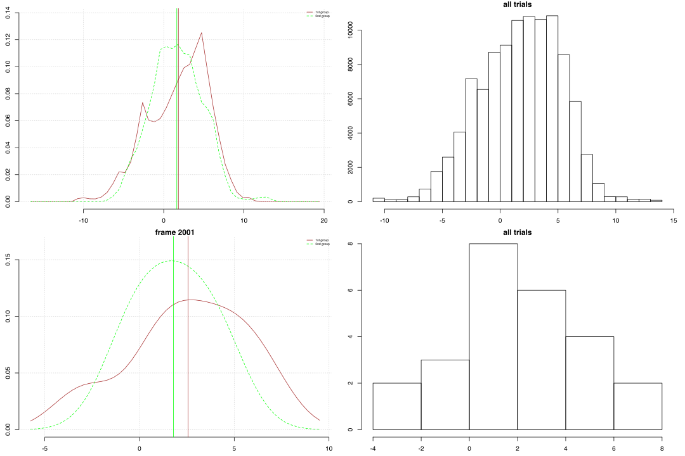
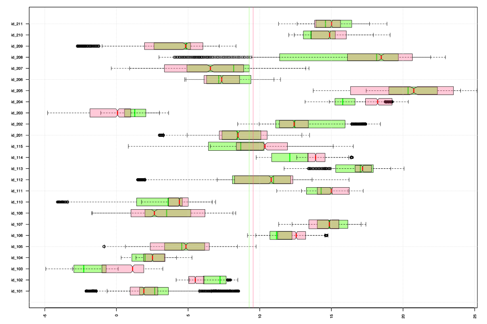

How does head deviate from a vertical axis?
To examine how a head deviates from a vertical axis we have to look at a plane number 7 in our 4th data model. This plane captures an orientation of the person’s head and is orthonormal to a line between the chin and middle of the forehead. Possible deviations from the vertical axis can occur in two planes – one that reflects posterior-anterior tilt and one that reflects lateral tilt. Thus we need to check elevation angels for planar points ‘sp’ and ‘su’ that are used to define ‘spinal planes’ in our data. Here ‘sp’ points correspond to forward direction and ‘su’ points to a left-hand direction.
In our set up there is some uncertainty about position of markers relative to individual bodies because of the manual placement but also because of the idiosyncrasies and anatomical variations across individuals. Thus as an approximate reference we should provide angle values that were captured in the beginning of the form than a person is in a standing position. Below we refer to this time point as ‘2001’ frame.
Summary. Posterior-anterior tilt of the head
According to description of an idealised movement we would expect all elevation angles to be around zero degree. However on average a head is tilted up around 9 degrees and the 1st group (students) shows about 3 degrees smaller tilt than the 2nd group (teachers).
In two groups the means of angles that are grouped after the 11 sub-movements vary only about 1 degree whereas mean variations for angles that are grouped by the trial identities is about 6 degrees. This happens because the individual differences among trials within the same group and sub-movement cancel each other out than we group the values by the sub-movements. In other words, the head tilt seems to be independent from the movement phases on a group level and dependant on a level of individual trials. Than we look at individual time series for two symmetrical movements we can notice correlated changes within corresponding sub-movements in the most of the trials.
Head, anterior tilting >> 11 sub-movements
| mean | sd | sem | n | NAs | max | min | |
|---|---|---|---|---|---|---|---|
| 1st group | 7.66 | 5.93 | 0.0245 | 58527 | 0 | 20.07 | -9.315 |
| 2nd group | 10.89 | 6.316 | 0.0298 | 44872 | 0 | 25.17 | -5.398 |
| 2001-1st | 9.969 | 7.03 | 1.879 | 14 | 0 | 19.25 | -8.275 |
| 2001-2nd | 12.14 | 5.927 | 1.787 | 11 | 0 | 22.46 | 0.843 |
Summary. Lateral tilt of the head
In the case of lateral deviations we would expect angles around zero with tilting to sides as an unbalanced reaction to a movement. On average head seems to be turned about 1.7 degrees to the right side in both groups. The range of sideward turns is about 10 degrees smaller than in upward and downward directions.
Similarly to the anterior angles, means of angles that are grouped after the 11 sub-movements vary only about 0.8 degrees whereas mean variations for angles that are grouped by the trial identities are about 2.7 degrees. If for all intervals the values of the students’ anterior angles were consistently smaller than angles of the 2nd group than the median values of the students’ lateral angles are larger in the 2nd, 5th, 6th, 7th and 8th sub-movements.
Furthermore, individual time series for the two time intervals with the symmetrical movements suggest a relation between changes in lateral orientation of the head and a direction of the stepping. Similarly to the anterior angles, these relations are highly individual and are difficult to generalise.
Head, lateral tilting >> 11 sub-movements
| mean | sd | sem | n | NAs | max | min | |
|---|---|---|---|---|---|---|---|
| 1st group | 1.831 | 3.72 | 0.0154 | 58527 | 0 | 11.07 | -10.6 |
| 2nd group | 1.634 | 3.224 | 0.0152 | 44872 | 0 | 13.42 | -6.807 |
| 2001-1st | 2.563 | 3.092 | 0.8263 | 14 | 0 | 6.96 | -3.21 |
| 2001-2nd | 1.795 | 1.936 | 0.5838 | 11 | 0 | 4.521 | -1.092 |

Posterior-anterior tilt of the head, grouped by id-trials
Below are boxplots of the elevation angles across different trials for the entire 2nd step of the Short Form. Brown color represents the 1st group and green the 2nd. Horizontal axes are given in degrees of the elevation angles so that positive values correspond to a head position that is turned upwards. The vertical axes represent grouping factor – identity of the trial.
Head, anterior tilting >> 11 sub-movements
| mean | sd | sem | n | NAs | max | min | |
|---|---|---|---|---|---|---|---|
| 1st group | 7.65 | 5.662 | 1.513 | 14 | 0 | 16.19 | -1.881 |
| 2nd group | 10.86 | 6.047 | 1.823 | 11 | 0 | 19.85 | 1.17 |
Density plots of the angle values for the entire 2nd step (11 sub-movements) grouped by the trial identities. Brown color represents the 1st group and green the 2nd; vertical lines mark mean value of the corresponding trials; blue vertical lines mark the angle values in the beginning of the form.

Lateral tilt of the head, grouped by id-trials
Below are boxplots of the elevation angles across different trials for the entire 2nd step of the Short Form. Brown color represents the 1st group and green the 2nd. Horizontal axes are given in degrees of the elevation angles positive values correspond to a head tilted to the right side. The vertical axes represent grouping factor – identity of the trial.
Head, lateral tilting >> 11 sub-movements
| mean | sd | sem | n | NAs | max | min | |
|---|---|---|---|---|---|---|---|
| 1st group | 1.834 | 3.192 | 0.8531 | 14 | 0 | 6.516 | -4.783 |
| 2nd group | 1.621 | 2.258 | 0.6808 | 11 | 0 | 5.359 | -2.247 |
Density plots of the angle values for the entire 2nd step (11 sub-movements) grouped by the trial identities. Brown color represents the 1st group and green the 2nd; vertical lines mark mean value of the corresponding trials; blue vertical lines mark the angle values in the beginning of the form.

Posterior-anterior tilt of the head, grouped by sub-movements
Also we can look at differences in the angles across the 11 sub-movements without differentiating between individual trials. Again, the brown color represents the 1st group and green the 2nd. Horizontal axes are given in degrees of the elevation angles and the vertical axes represent grouping factor – a number of the sub-movement.
Head, anterior tilting >> 11 sub-movements
| mean | sd | sem | n | NAs | max | min | |
|---|---|---|---|---|---|---|---|
| 1st group | 7.614 | 1.123 | 0.3388 | 11 | 0 | 8.597 | 5.005 |
| 2nd group | 10.86 | 0.8911 | 0.2687 | 11 | 0 | 12.02 | 9.655 |
Density plots of the angle values grouped by the 11 sub-movements. Brown color represents the 1st group and green the 2nd; vertical lines mark mean value of the corresponding sub-movement for 1st and 2nd group. The 2nd and 3rd rows capture a symmetrical motion sequence: from the left into right bow stance and from the right into left.
Lateral tilt of the head, grouped by sub-movements
Also we can look at differences in the angles across the 11 sub-movements without differentiating between individual trials. Again, the brown color represents the 1st group and green the 2nd. Horizontal axes are given in degrees of the elevation angles and the vertical axes represent grouping factor – a number of the sub-movement.
Head, lateral tilting >> 11 sub-movements
| mean | sd | sem | n | NAs | max | min | |
|---|---|---|---|---|---|---|---|
| 1st group | 1.824 | 1.002 | 0.3023 | 11 | 0 | 3.461 | 0.2994 |
| 2nd group | 1.608 | 0.5514 | 0.1662 | 11 | 0 | 2.68 | 0.8275 |
Density plots of the angle values grouped by the 11 sub-movements. Brown color represents the 1st group and green the 2nd; vertical lines mark mean value of the corresponding sub-movement for 1st and 2nd group. The 2nd and 3rd rows capture a symmetrical motion sequence: from the left into right bow stance and from the right into left.
Posterior-anterior tilt of the head, grouped by id-trials and sub-movements
Below are boxplots for two intervals of the 2nd step that capture symmetrical body motion: from the left to right bow stance and from the right to left bow stance. The boxplots of these intervals are superimposed for each of the trials. The 1st interval is marked by green color and the 2nd by red (color is not associated with groups). These boxplots suggest that the angle values for the two intervals don't reflect the symmetry of the actual movement.

Also, we can differentiate between the different sub-movements within the two intervals and look at them individually. Below are two columns of the boxplots with 4 rows that represent consecutive phases of our two intervals. The 1st column represents the movement from the left to right bow stance (4th - 7th sub-movements), the 2nd column represents the movement from the right to left bow stance (8th - 11th sub-movements). We can notice that differences within the same trial are larger across the rows than across the columns. In other words, time intervals that mark movements that are physically different show a larger impact on the angle values than time intervals with similar movements.
Furthermore we can compare the actual time series for the two intervals. The figure below shows 25 plots for each of the trials with the red color marking the 1st interval and green the 2nd. Vertical lines show boundaries for the four sub-movements within each interval, horizontal lines show means and a blue horizontal line marks the angle value in the 1st frame of the entire performance than a person is in a straight position. Horizontal axis is given in frames with sampling frequency 120 frames per second. Green is for the 1st interval (4-7th sub-movements; left to right bow stance); Red is for the 2nd interval (8-11th sub-movements; right to left bow stance).
We can notice a clear correlation between the two intervals for some trials (e.g. ‘id_101’, ‘id_204’). In trials like ‘id_205’, ‘id_115’ or ‘id_201’ a timing of sub-movements within intervals is not matching but time series are nonetheless correlated. Similarly, we can see that there are few trials (e.g. ‘id_103’, ‘id_114’, ‘id_204’) with a clear shift in the means of the intervals that might reperesent a left/right bias of an individual. It seems that for the most of the trials, anterior deviations of the head reflect the movement phases but these variations are highly individual.

Lateral tilt of the head, grouped by id-trials and sub-movements
Below are boxplots for two intervals of the 2nd step that capture symmetrical body motion: from the left to right bow stance and from the right to left bow stance. The boxplots of these intervals are superimposed for each of the trials. The 1st interval is marked by green color and the 2nd by red (color is not associated with groups).
Below are two columns of the boxplots with 4 rows that represent consecutive phases of our two intervals. The 1st column represents the movement from the left to right bow stance (4th - 7th sub-movements), the 2nd column represents the movement from the right to left bow stance (8th - 11th sub-movements).
Furthermore we can compare the actual time series for the two intervals. The figure below shows 25 plots for each of the trials with the red color marking the 1st interval and green the 2nd. Vertical lines show boundaries for the four sub-movements within each interval, horizontal lines show means and a blue horizontal line marks the angle value in the 1st frame of the entire performance than a person is in a straight position. Horizontal axis is given in frames with sampling frequency 120 frames per second. Green is for the 1st interval (4-7th sub-movements; left to right bow stance); Red is for the 2nd interval (8-11th sub-movements; right to left bow stance).
In some trials like ‘id_105’, ‘id_111’, ‘id_202’ or ‘id_211’ changes of the red lines are mirrored around the horizontal mean lines by the green line. In other words, if we take mean value as a ‘normal’ orientation than for some people stepping from the left to right (red lines) and from the right to left bow stance (green lines) can be associated with a tilting of the head relative to their ‘normal vertical’.
For example, in the trial ‘id_111’, in the 4th sub-movement the head is straight and around 4 degrees turned leftwards relative to horizontal mean lines; in the 5th sub-movement (roll back to the right) the angle approaches the ‘normal’ value and so the head is tilting to the right; in the 6th sub-movement that includes a mid swing stance of the right foot the head continues to turn rightwards but angle increases beyond the horizontal mean line and thus the head is tilted rightwards relative to the mean. Similarly the 2nd interval that is represented by the green line follows the movement and shows a mirrored relation to the angle changes in the 1st interval.